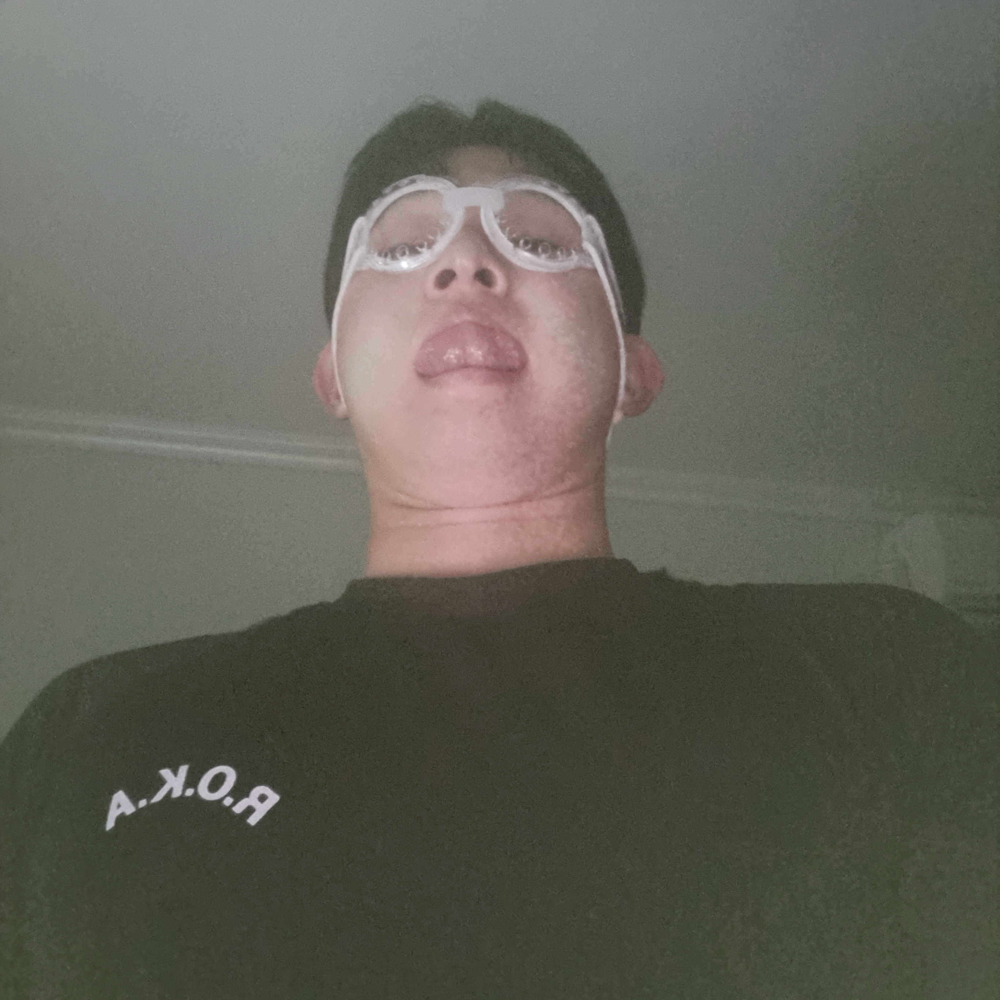

An Hyeon Seok, who is he? 안현석, 그는 누구인가?
본리초등학교 졸업->경암중학교 졸업->심인고등학교 졸업->영남대학교 수학과 입학->육군 제 5보병사단 병장 전역->현재
그는 2001년 02월 21일 생이며 대구에서 태어났다. 초중고를 무사히 졸업하고 대학에 입학했으며, 원하는 과에 가서 1등을 하며 좋은 성적을 유지했다.2학년까지 재학 후, 군대에 입대하였으며 1년 6개월 군 복무를 마치고 제대하고 현재 공부, 운동, 일 등을 하며 지내고 있다.
지금 그는 동아리 엠티를 갈지말지 고민중이다.